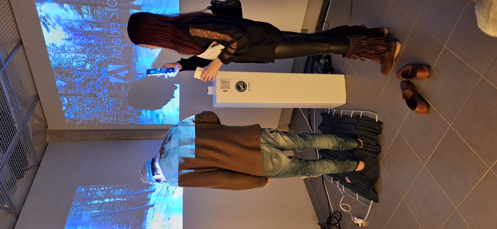
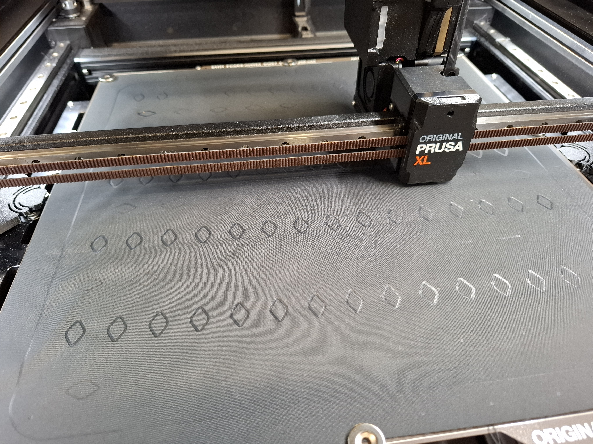
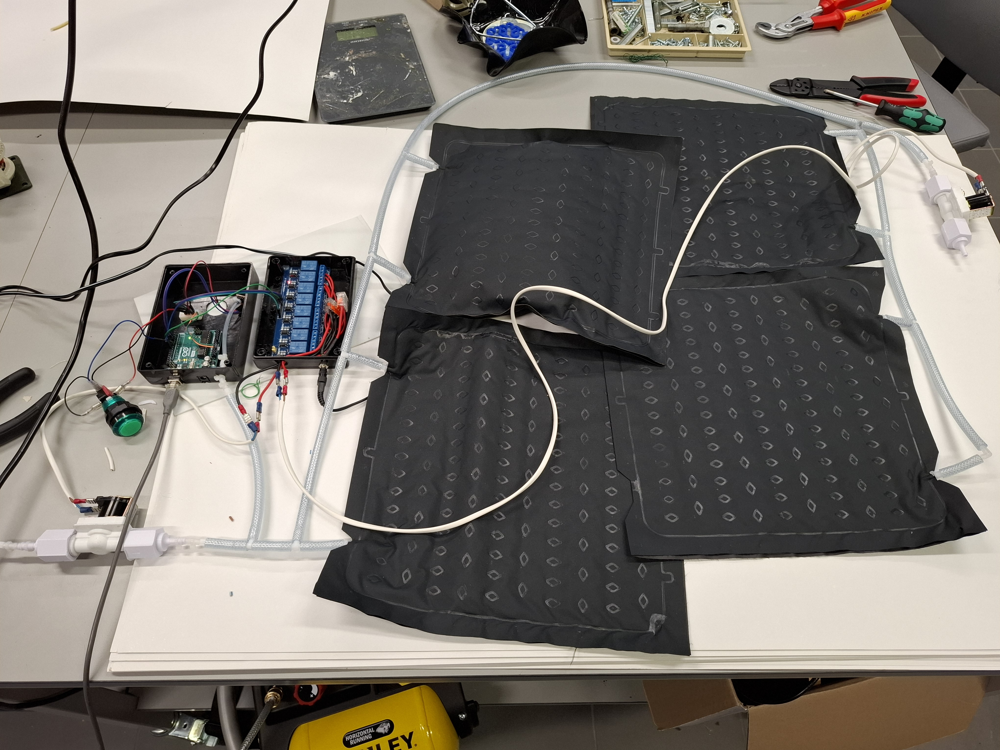

Haptistep XR

A prototype exploring new ways to experience haptic in xr enviroments. An Arduino controlled air filled mats, that can adjust it's density as an way to mimic various ground surfaces. This project was also a very interesting journey to a new prototyping technique; creating airmats by by using a 3D printer, by heatwelding TPU-backed fabrics together.

